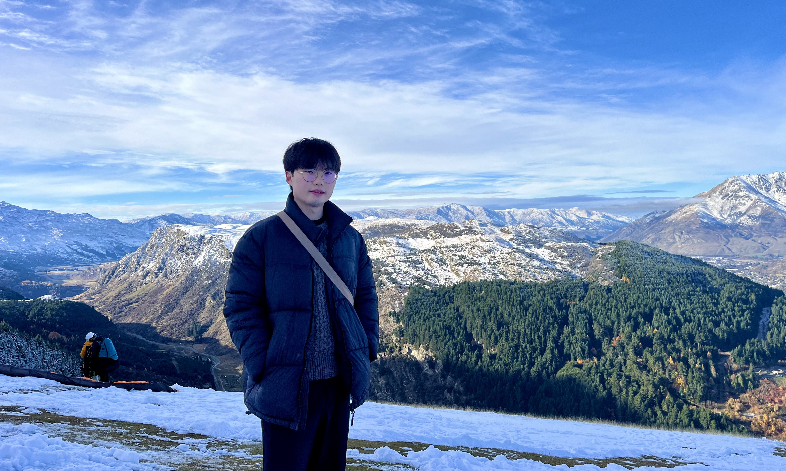

Hi, I'm Joshua 👋 I am a PhD student in Psychology (cognition) at UC Berkeley, advised by Marina Dubova. My research investigates the way people work out how the world fits together, and how they use this understanding to decide what to do. To answer these questions, I use a combination of behavioural experiments, online surveys, computational modelling, and text mining of online data.
Before graduate school, I completed an MSc in Cognitive and Decision Sciences at University College London, working with Mario Giulianelli. Even before that, I studied Philosophy and Psychology at the University of Edinburgh, where I worked with Neil Bramley, Zachary Horne, and Martin Corley.
Outside of research, I enjoy bouldering, baking, cycling, playing the piano, trying out coffee spots, watching video essays, and doomscrolling.
You can email me at joshua_hew [at] berkeley.edu.